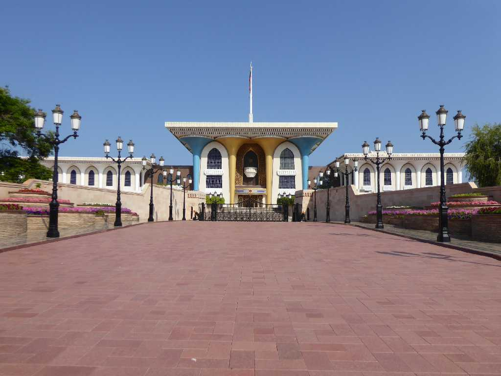
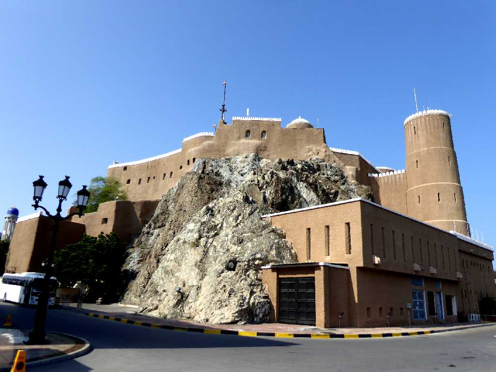
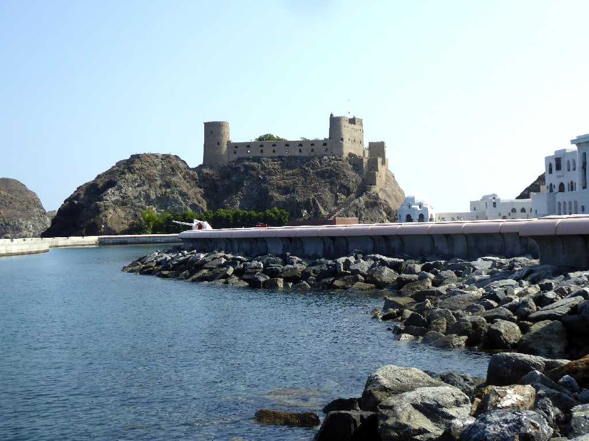
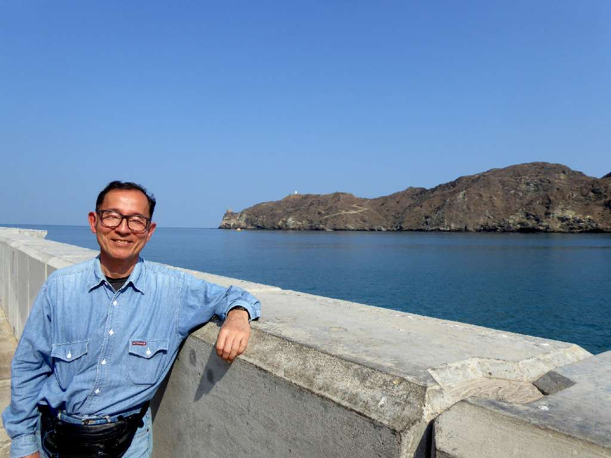

Al Alam Palace Muscat
１９７２年にオマーン湾を望むマスカット旧市街の中心に創られたアルアラム宮殿はスルタン・カブース王の儀式用宮殿と迎賓館になっている

Al Mirani Fort Old Harbour Muscat
オマーン湾の旧市街の港を守るためポルトガルにより創られたアルミラニ要塞

Al Jalali Fort Old Harbour Muscat
ミラニ要塞と共に旧市街の港を守るためにポルトガルにより創られたアルジャーラリー要塞

December 14 2019 Old Harbour Muscat